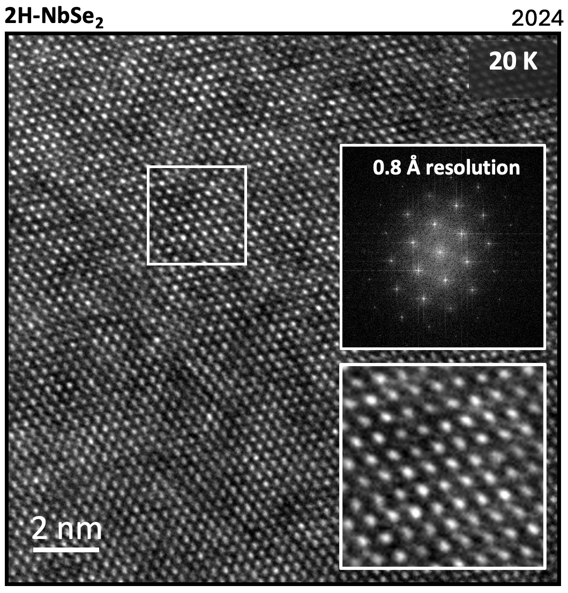

Following initial demonstration of a novel liquid helium flow cryogenic TEM holder in 2023, our team assembled subsequent prototypes that have shown sub-Angstrom HRTEM imaging, low sample drift (less than 0.4 Angstrom per second), and low millikelvin-level temperature fluctuations.
The sample stage is compatible with state-of-the-art aberration-corrected microscopes such as TFS Spectra 300.
